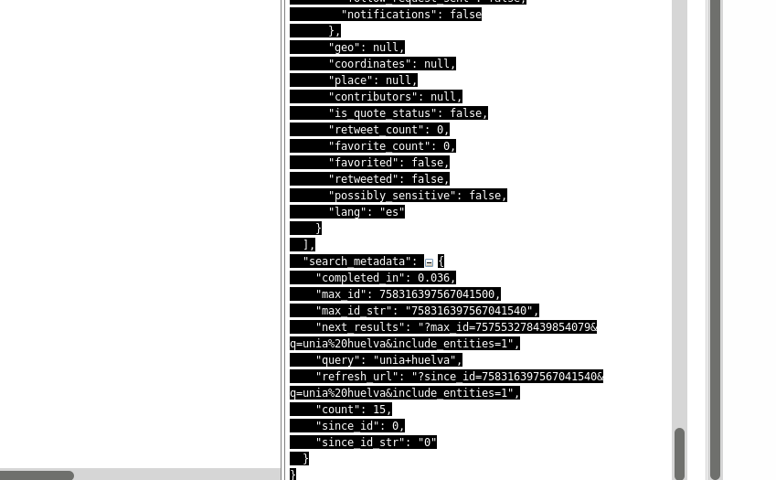
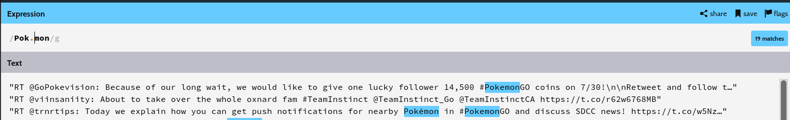
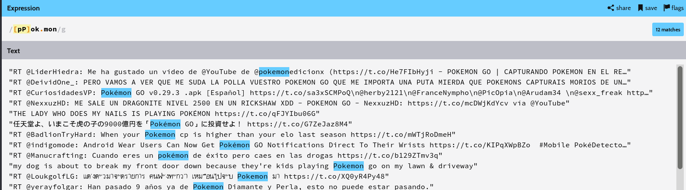
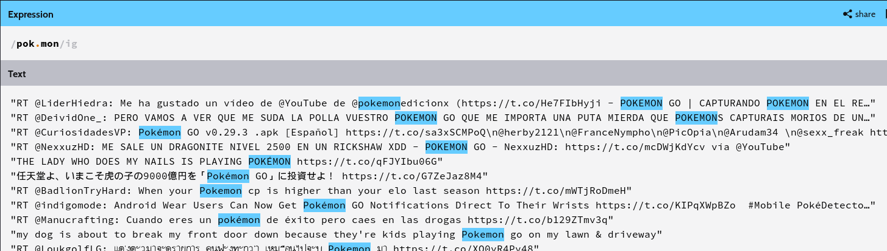
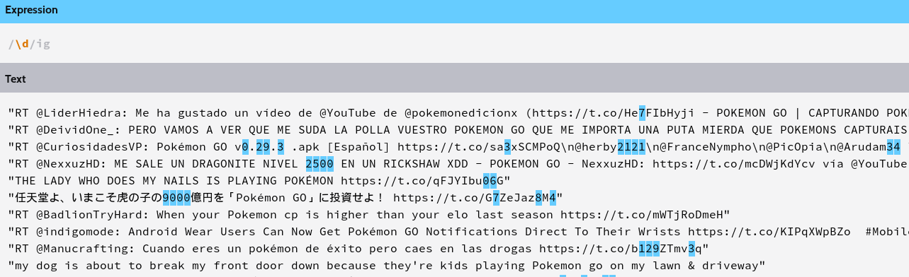
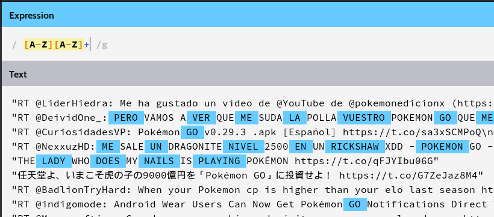
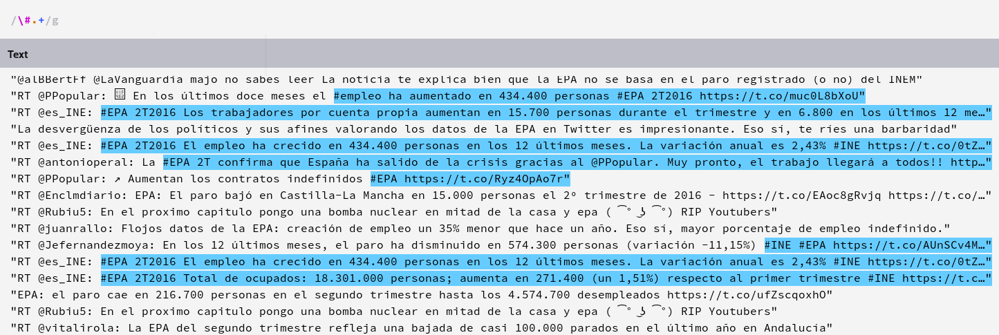
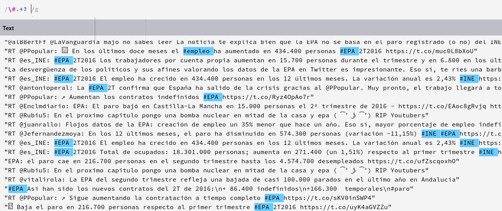
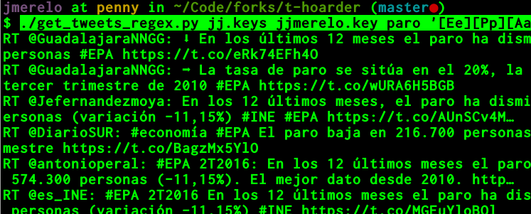

Extracción de texto y automatización en Twitter
JJ Merelo, @jjmerelo
Primero, extraigamos la
información
Luego, procesémosla
En el principio fue el API
Un API permite usar la web
por debajo
Entrando paso a paso
Copia/pega entre llaves

Pero esto no funciona (salvo en
casos muy concretos)
Extensión
Chrome/Chromium
⇒ Save Response
(icono copy/pegar)
Pero el formato es muy
feo
Filtrando con
jq
Ya tenemos el texto en
filas
Habrá que pararse
para ver qué se ha hecho
Ejercicio
Hacer una búsqueda con Postman u
otro sistema similar, guardarla (o
copypaste) en JSON y extraer
sólo los tweets
Pero no tememos a la línea de
órdenes
Podemos usar tweet_rest.py
Búsqueda ⇒ Fichero
.txt
⇒ Cambia extensión
.csv ⇒ Importa Calc
⇒
Recorta columna ...
Nueva versión del de Mari Luz Congosto
python tweet_rest.py mis.keys donde_esta_la.key ongs.txt --tweets
⇒ Copia/Pega o añade
>fichero.txt al final
Ejercicio
Usar este programa para descargar un fichero de texto con
tweets, uno por línea
La mejor forma de:
✔ Procesar y analizar datos
✔ Ir más allá en la
noticia/informe
✔ Adquirir herramientas para resolver
problemas
Considera Python
Imagen de EVLCN en Flickr
JSON = JavaScript Object
Notation
Una forma compacta de comunicar y
almacenar información
Ejercicio
Tras visualizar la estructura JSON, extraer las fuentes
(source) de todos los
tweets anteriores
Ejercicio
Mirar los otros datos de un tweet y comentar en clase
cuáles podían interesar medir y tabular
Con el texto extraído se puede trabajar de
múltiples formas
✔ Buscar palabras
✔ Nubes de palabras
✔ Metadatos: longitud RTs...
Ejercicio
Crear una nube de palabras usando el texto extraído
anteriormente usando TagUl u otro servicio
Procesando la información: usando
expresiones regulares
Usa expresiones regulares cuando quieras
✔ sacar
texto
✔ filtrar
texto
✔ buscar expresiones
complejas
Una expresión regular expresa la
estructura de un texto
✔ Una o más palabras
✔ Dos Palabras En
Mayúsculas
✔ Cualquier #hashtag
Usemos expresiones regulares online
Una palabra es una expresión regular:
/Pokemon/g
// ⇒ Delimita
g ⇒
global ⇒ todas
Introduce en Expression
⇒ Mira en Text
⇒ Pulsa en List
A veces Pokémon lleva acento
/Pok.mon/g

.: cualquier carácter (uno solo)
O no lleva mayúsculas
/[Pp]ok.mon/g

[]: grupo de caracteres
Vocales ⇒ [aeiou]
O nos dan igual las mayúsculas
/pok.mon/gi

✔ /i: independiente de mayúsculas/minúsculas
✔ /s: líneas múltiples
¿Han cantado bingo?
/\d/ig

✔\ y letras: clases de caracteres
✔ Letras ⇒ \w
✔ Todo excepto letras ⇒ \W
✔ Espacio en blanco ⇒ \s
Esos acrónimos de dos o más letras...
/ [A-Z][A-Z]+ /g

✔[A-Z]: rangos de caracteres
✔ Combinado ⇒ [A-Z\d]
✔+: una o más repeticiones
✔*: 0 o más repeticiones
✔?: exactamente una aparición
Devorando hashtags
//\#.+/g

Devorando sólo hashtags
//\#.+? /g

✔+,*: búsqueda voraz
✔+?,*?: búsqueda humilde:
primero que cumpla
python get_tweets_regex.py jj.keys jjmerelo.key paro '[Ee][Pp][Aa]'

Ejercicio
Usar el último programa para extraer información sobre
los hashtags asociados a alguna ONG conocida
Procesar información: un paso más allá
✔ Letras ⇒ \w
✔ Todo excepto letras ⇒ \W
✔ Espacio en blanco ⇒ \s
Esos acrónimos de dos o más letras...
/ [A-Z][A-Z]+ /g
✔[A-Z]: rangos de caracteres
✔ Combinado ⇒ [A-Z\d]
✔+: una o más repeticiones
✔*: 0 o más repeticiones
✔?: exactamente una aparición
Devorando hashtags
//\#.+/g
Devorando sólo hashtags
//\#.+? /g
✔+,*: búsqueda voraz
✔+?,*?: búsqueda humilde:
primero que cumpla
python get_tweets_regex.py jj.keys jjmerelo.key paro '[Ee][Pp][Aa]'
Ejercicio
Usar el último programa para extraer información sobre
los hashtags asociados a alguna ONG conocida
Procesar información: un paso más allá
✔ Letras ⇒ \w
✔ Todo excepto letras ⇒ \W
✔ Espacio en blanco ⇒ \s
Esos acrónimos de dos o más letras...
/ [A-Z][A-Z]+ /g
✔[A-Z]: rangos de caracteres
✔ Combinado ⇒ [A-Z\d]
✔+: una o más repeticiones
✔*: 0 o más repeticiones
✔?: exactamente una aparición
Devorando hashtags
//\#.+/g
Devorando sólo hashtags
//\#.+? /g
✔+,*: búsqueda voraz
✔+?,*?: búsqueda humilde:
primero que cumpla
python get_tweets_regex.py jj.keys jjmerelo.key paro '[Ee][Pp][Aa]'
Ejercicio
Usar el último programa para extraer información sobre
los hashtags asociados a alguna ONG conocida
Procesar información: un paso más allá
✔ Usa el API para bajar tweets
✔ Usa expresiones regulares para
extraer palabras
✔ Procesa las palabras: nubes, gráficos